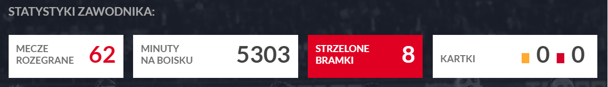
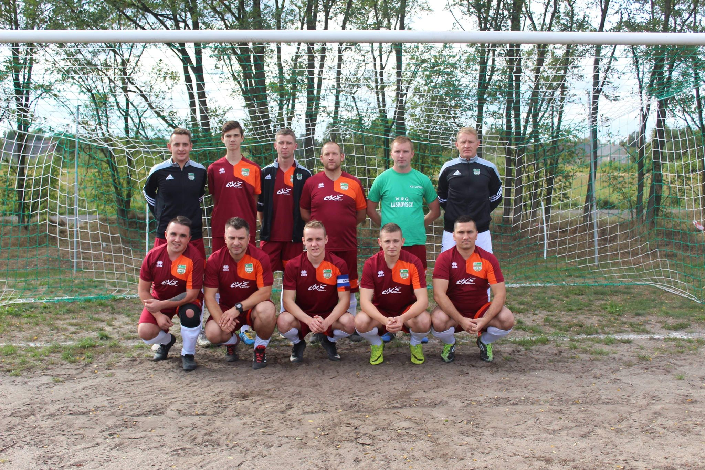

Moja Kariera
Moja przygoda z piłką nożną zaczyna sie od dawna.Zawsze gdy miałem tylko wolną chwile lubiałem sobie pokopać. Od 2015 postanowiłem spórobwać swoich sił w Klubie Sportowym "Nysa" Przewóz jako junior.Szło mi bardzo dobrze. Po trzech latach grania w juniorach postnowiłem przejśc do amatorskiej drużyny piłkarskiej grającej w "B" klasie "Ks Lipna". Udało nam sie awansować do wyższej ligi ("A" klasy). W rundzie wiosennej mieliśmy spore problemy kadrowe. Zdobywanie punktów sprawiało nam spore problemy. Niestety z powodu braków kadrowych postanowiliśmy rozwiązać drużyne na jakiś czas. Mysiałem przemyśleć sprawy i zdecydować do jakies drużyny mogę dołączyć. Prezes z Lipnej powiedział mi, żebym udał sie do Gozdnicy i dołączył do drużyny "Budowlani" Gozdnica. I tak sie stało. Pod koniec sierpnia zagramy pierwszy mecz. Ciekawe jak nam pójdzie !
Moje statystyki
Ks Lipna
